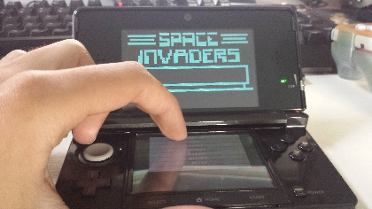
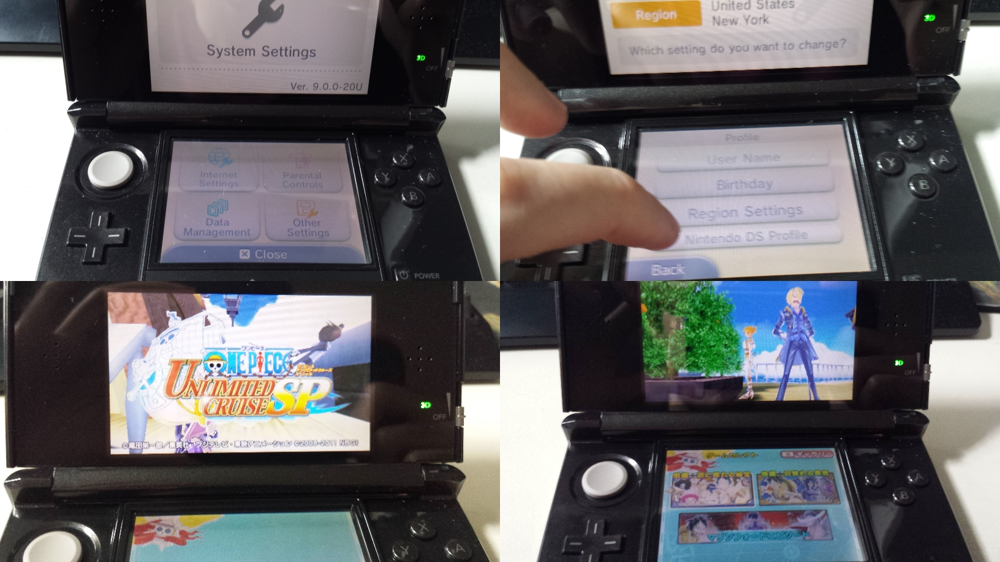
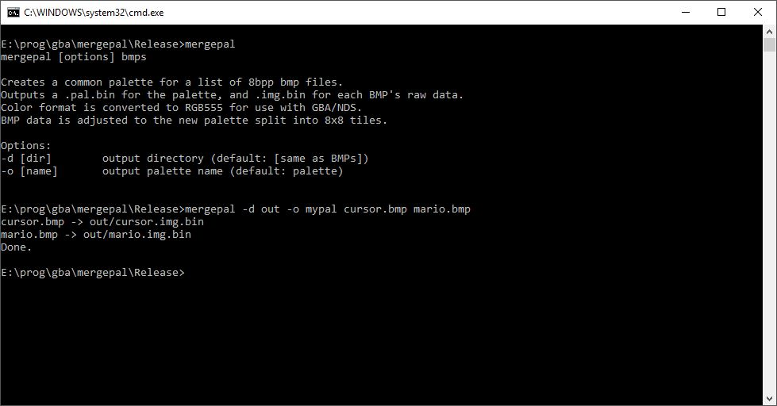
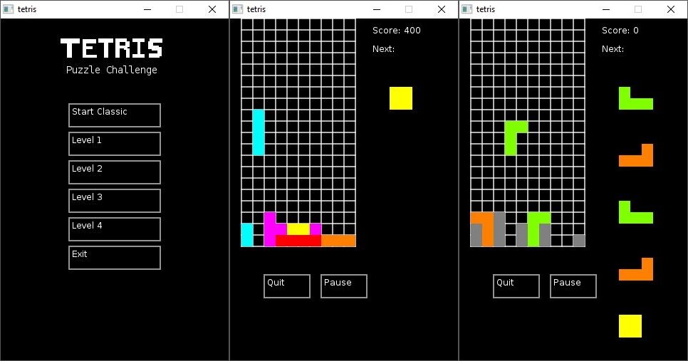
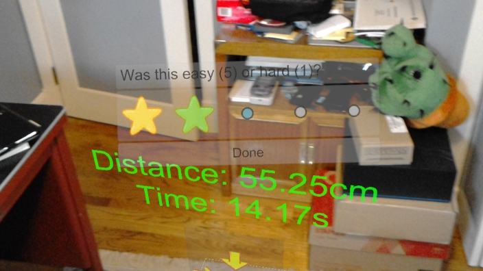

Past Projects
3DS Particle Demo |
A simple particle demo for the Nintendo 3DS written in C.
I wrote it to test out multithreading on the 3DS.
Includes controls to edit the particles size, color, position, etc.
It was written to target *.3ds homebrew to use with a Gateway 3DS cartridge back in the day.
So the code will need some tweaking to compile with the latest version of ctrulib and homebrew launcher.
|
3DS Chip8-CTRU |
A port of a Chip8 emulator for the Nintendo 3DS written in C.
Includes multi-rom support.
Also played around with adding stereoscopic 3D effects only using software rendering.
This too was written for Gateway *.3ds files so the code needs to updated to work with the latest version of the libraries.
|
OpenRegion 3DS |
hi.
|
Neon GBA Lighting |
hello
|
Mergepal |
A command line utility written in C++.
It's used to merge the palettes of multiple 256 color BMP files.
It outputs the merged palette and the raw data for each BMP using the new palette.
I made this because I needed to create a common sprite palette while keeping each individual sprite's data in separate files for GBA/NDS development.
|
Transconsciousness - MiniLD #55 |
hello
|
Tetris Puzzle Challenge |
hello
|
Hololens Development |
proprietary |
The Obligatory Pong Clone - PSP
|
hello
|